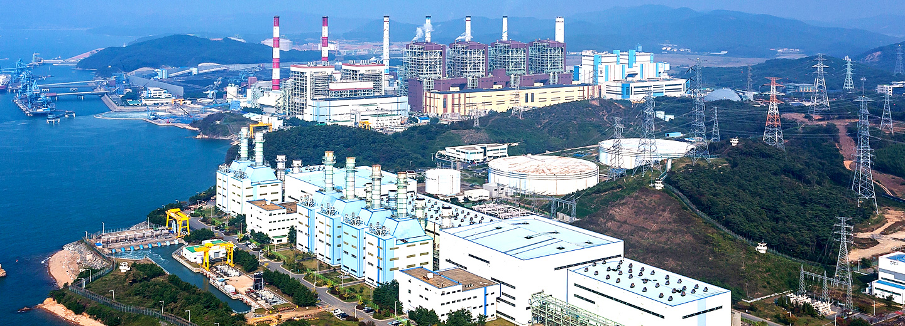

국내 최초의 국산화 표준 석탄화력발전소
보령발전본부
 국내 전체 전력설비의 3.50%를 차지하는 대규모 발전단지 로 유연탄 화력, LNG복합화력, 태양광, 소수력, 연료전지의 설비를 운영 중이며,
우드펠릿과 유기성 고형연료(하수슬러지)를 화력발전소에서 혼소하는 설비와 습식아민 이산화탄소 포집 설비까지 다양한 설비를 보유한 국내 최고의 종합 발전단지 입니다.


세계 최고 수준의 발전소 운영능력
국내 최초의 표준석탄화력으로 국내 석탄화력발전소 운영 기술의 효시가 된 3호기는 2018년 3월 6,500일 장기 무고장 운전이라는 세계 유례없는 기록을 달성하며, 철저한 설비관리 능력과 운영 기술력의 우수성을 대내외에 널리 알리고 있으며, 1996년 미국 전력기술전문지인 electric power international 선정 세계 최우수 발전소상을 수상한바 있습니다. 2008년에는 asian power awards 운전정비부문 금상을 수상하였고, 2009년에는 미국 power지에서 선정한 2008 coal-fired top plant 친환경 발전소 구현 상을 수상하는 등 세계 최고 수준의 운영기술을 인정받고 있습니다.
6,500일
장기무고장운전 달성
2018.03
미국 POWER사 선정
세계 최우수 발전소 수상
2009.05
Asian Power awards
운전정비부문 금상 수상
2008.05
표준석탄화력 친환경개선사업으로
친환경·저탄소·고효율 발전소 구현
국내 최초 표준석탄화력인 3,4호기는 친환경개선 사업을 통해 발전설비 성능 및 신뢰성을 향상 시키고, 최고수준의 환경설비를 구축하여 2023년에는 2015년 대비 대기오염물질 발생량 80%를 감축할 계획입니다. 또한 2024년까지 3,200억원을 투자하여 현재 운영 중인 모든 옥외 저탄장을 옥내 저탄장으로 교체함으로써 비산먼지를 원천적으로 차단할 예정입니다.
보령발전본부 설비현황
| 화력 | 복합화력 | 소수력 | 태양광 | 연료전지 | 합계 |
|---|---|---|---|---|---|
| 3,050MW | 1,350MW | 7.5MW | 4.109MW | 7.48MW | 총 4,419MW |